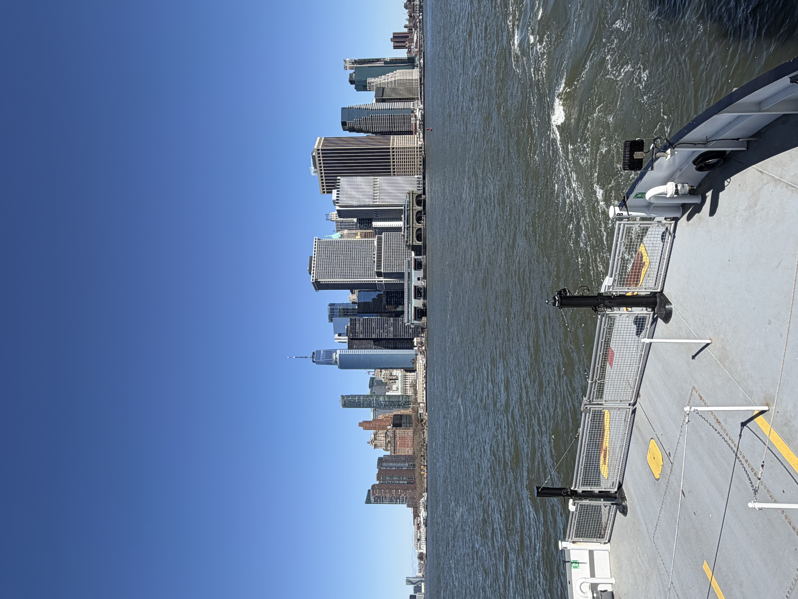

My background
Hello, my name is Andrew and I am an upcoming senior. I am originally from New York specifically Queens and I commute to NYU. My major is neuroscience and I am on the premed track. I am taking Intro to Web Design because I am interested in learning how to create a website and how certain websites have cool and gimmicky features that others do not. Also, I am interested in learning the code writing which goes into creating a website and how different codes affect the website in different ways.

My interests
In my free time I like to go outside and spend time with my friends. We go play soccer or we go try out new food spots or just go eat from the spots we already like. I also enjoy playing video games, but I play with my friends because playing alone is boring in my opinion. Another thing I like to do is go to the gym.

About This Website
This website serves as a collection of projects and assignments completed throughout my Intro to Web Design course at New York University. The pages demonstrate a variety of web development skills, including HTML, CSS, JavaScript, user experience design, responsive design, and digital media production.